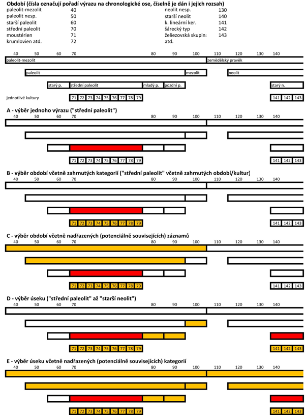

| Název | Třída | Typ | Poznámka |
|---|---|---|---|
| AKTIVITY | Komponenty | jednoduchý, systémový | |
| AREÁL | Komponenty | dvoustupňový | zápis jen heslo |
| AUTORSKÁ ROLE | Externí zdroje | jednoduchý | |
| DOHLEDNOST | Lety | jednoduchý | |
| FORMÁT (VELIKOST) DOKUMENTU | Extra data | jednoduchý | |
| JAZYK DOKUMENTU | Dokumenty | jednoduchý | |
| JMÉNA | Projekty, Akce, Dokumenty, Externí zdroje, Osobní foto | jednoduchý | zobrazena doplňující informace |
| KATASTRY | Projekty, Akce, Lokality | jednoduchý, systémový | zobrazena doplňující informace |
| KATEGORIE / DRUH LOKALITY | Lokality | dvoustupňový | zápis jen heslo |
| KATEGORIE / DRUH OBJEKTU | Nálezy | dvoustupňový | zápis do 2 polí (kategorie, heslo) |
| KATEGORIE / DRUH PŘEDMĚTU | Nálezy | dvoustupňový | zápis do 2 polí (kategorie, heslo) |
| KRAJE | Projekty, Akce, Lokality | jednoduchý, systémový | |
| KULTURNÍ PAMÁTKA | Projekty | jednoduchý | |
| LETIŠTĚ | Lety | jednoduchý | |
| MATERIÁL DOKUMENTU | Dokumenty | jednoduchý | |
| NÁHRADA (DOKUMENTU) | Extra data | jednoduchý | |
| OBDOBÍ | Komponenty, Komponenty dokumentu | dvoustupňový | zápis jen heslo |
| OKRESY | Projekty, Akce, Lokality | jednoduchý, systémový | |
| ORGANIZACE | Projekty, Akce, Dokumenty, Externí zdroje | jednoduchý | zobrazena doplňující informace |
| POČASÍ | Lety | jednoduchý | |
| PODNĚT – SONDY | Dokumentační jednotky (Akce) | jednoduchý | |
| POSUDEK | Dokumenty | jednoduchý | |
| POVRCH | Dokumentační jednotky (Akce) | jednoduchý | |
| PŘESNOST PIAN | PIAN | jednoduchý, systémový | |
| PŘÍSTUPNOST | Projekty, Akce, Lokality, Dokumenty | jednoduchý, systémový | |
| ŘADA | Dokumenty | jednoduchý, systémový | |
| SOUŘADNICOVÝ SYSTÉM | PIAN | jednoduchý, systémový | |
| SPECIFIKACE DATA | Akce (samostatné) | jednoduchý, systémový | |
| SPECIFIKACE OBJEKTU | Nálezy | dvoustupňový | zápis jen heslo |
| SPECIFIKACE PŘEDMĚTU | Nálezy | jednoduchý | |
| TVAR | Tvary | jednoduchý | |
| TYP AKCE | Akce | dvoustupňový | zápis jen heslo |
| TYP DOKUMENTU | Dokumenty | jednoduchý, systémový | |
| TYP DOKUMENTAČNÍ JEDNOTKY | Dokumentační jednotky (Akce) | jednoduchý, systémový | |
| TYP EXTERNÍHO ZDROJE | Externí zdroje | jednoduchý, systémový | |
| TYP LOKALITY | Lokality | jednoduchý, systémový | |
| TYP NÁLEZU | Nálezy | jednoduchý, systémový | |
| TYP ORGANIZACE | Organizace | jednoduchý | |
| TYP PIAN | PIAN | jednoduchý, systémový | |
| TYP PROJEKTU | Projekty | jednoduchý, systémový | |
| TYP SONDY | Dokumentační jednotky (Akce) | jednoduchý | |
| TYP UDÁLOSTI | Extra data | jednoduchý | |
| ULOŽENÍ ORIGINÁLU | Dokumenty | jednoduchý | |
| ZACHOVALOST (DOKUMENTU) | Extra data | jednoduchý | |
| ZEMĚ | Extra data | jednoduchý |
Hesláře
DůležitéUpozornění
Následující stránka k 1. srpnu 2024 neprošla revizí a informace, které obsahuje, nemusí být plně platné pro aktuálně spuštěné verze nástrojů AMČR. Zároveň mohou být některé odkazy, které stránka obsahuje nefunkční, screenshoty ze zastaralých verzí nástrojů apod.
Data AMČR jsou z větší části strukturována pomocí standardizovaných heslářů (číselníků, řízených slovníků). Hesláře jednoznačně nastavují sledovanou míru obecnosti/detailu, urychlují zápis typických informací, usnadňují vyhledávání, umožňují data strojově analyzovat a propojovat s dalšími systémy. Díky heslářům je také dodržována jednotná terminologie na území ČR, která vede ke snadnější orientaci ve vznikajících datech.
Hesláře dělíme na jednoduché a dvojstupňové. Jednoduché hesláře obsahují jednu řadu hesel, z nichž uživatel vybírá, ale mohou též obsahovat další dílčí pomocné informace pro zápis (např. zobrazení okresu u katastru). Dvojstupňové hesláře obsahují hierarchicky uspořádaná hesla, z nichž obecnější kategorie slouží pro usnadnění výběru a do záznamu se neukládá (Areály, Druh lokality), nebo se ukládají hesla obě (obecnější i specifické: viz např. Kategorie a Druh nálezu). Charakteru heslářů odpovídají typy výběrových seznamů v aplikaci. Některé hesláře chápeme jako systémové – nelze je editovat bez zásahu do zdrojového kódu, jelikož na nich přímo závisí chování aplikace a specifické funkce.
Obsažená hesla vycházejí z hesel užívaných v ADČ (Kuna a Křivánková 2006), SAS (Volfík 2009) a formulářích ZAA. Systém odborných heslářů se opírá o standardní archeologickou terminologii a obsažena jsou taková hesla, u nichž lze předpokládat vyšší než výjimečné zastoupení na základě analýzy stávajících dat. Aplikace obecně preferuje uzavřené hesláře, jejichž doplnění je možné pouze v důvodných případech po konzultaci se správcem systému. Výjimku tvoří heslář jmen, u něhož lze předpokládat pravidelný nárůst počtu údajů a lze jej proto uživatelsky doplňovat.
Hesláře AMČR vytvářejí svým obsahem základ jednotné oborové terminologie, který je aplikován pro popis všech archeologických výzkumů v ČR evidovaných archivy ARÚP a ARÚB. Aktuální obsah všech heslářů je dostupný na webové adrese http://www.archeologickamapa.cz/?page=documents.
Hesláře obvykle obsahují pole pořadí, pro určení pořadí položek v seznamu. Řazení může být abecední, případně chronologické (Období), vyskytují se však také případy řazení významového (Nálezy), případně na základě četnosti užívání (Typ projektu). Některé z heslářů mohou obsahovat pole rozsah či zahrnuje, která udávají hierarchický vztah hesel, který je zohledněn v modulu vyhledávání (viz Obr. 1). Obecná hesla jsou často doplněna zkratkou nesp. s významem blíže nespecifikováno.
Hesláře Areály a Období umožňují provádět popis komponent pomocí obecnějších i konkrétnějších pojmů (např. pojem sídliště nesp. zahrnuje též pojmy stanice, usedlost a vesnice). Heslář Období obsahuje 135 chronologických pojmů v daných hierarchických vztazích. Každému pojmu odpovídá číselná hodnota stanovující jeho pořadí v chronologickém systému a číselně stanovený rozsah. Vyhledávat pomocí tohoto hesláře lze buď podle jednoho hesla, nebo zadáním rozsahu, přičemž dále je možno volit všechny hierarchicky nižší (zahrnuté) pojmy a/nebo pojmy nadřazené (např. při výběru pojmu střední doba bronzová lze zohlednit i pojem doba bronzová nesp., protože komponenty charakterizované tímto pojmem rovněž teoreticky mohou se střední dobou bronzovou souviset, více viz Období).
Obecné hesláře
| Heslář | Obsah |
|---|---|
| Jména | Heslář obsahuje jména osob působících nebo publikujících na poli české archeologie. Nelze jej však zaměňovat za autoritní seznam jednotlivců. Pokud v systému vystupuje několik osob se stejným jménem, všechny tyto osoby budou vedeny pod totožnou položkou hesláře. Cílem hesláře jmen tak není jednoznačně identifikovat osoby, ale zjednodušit zápis jména. Identifikace konkrétní osoby je možná na úrovni registrovaného uživatele. Heslář obsahuje jak celé jméno a příjmení (např. Novák, Jan), tak zkrácenou verzi pro výpis (Novák, J.). |
| Organizace | V hesláři jsou zastoupeny oprávněné organizace a další instituce, které mohou mít či měly vztah k archeologickým výzkumům na území ČR. Heslář organizací je užíván zejména při registraci uživatele, pro určení jeho afilace a dále při popisu projektů, akcí a dokumentů. Pokud některá organizace není v hesláři zastoupena, je třeba kontaktovat správce systému a zažádat o její zařazení do evidence. Každá organizace je vymezena svým názvem a typem. |
| Typ organizace | Rozdělení organizací podle typu (muzea, univerzity, ústavy památkové péče apod.). Jde o pomocný heslář pro účely administrace. |
| Přístupnost | Heslář přístupnosti záznamů odpovídá rozdělení uživatelských rolí (A–E; anonym, badatel, archeolog, archivář, administrátor). Slouží k přiřazování nutného oprávnění pro zobrazení libovolného záznamu (projektu, akce, dokumentu atd.). Jedná se o systémový heslář. |
| Kraje | Heslář odpovídá aktuálnímu správnímu členění ČR podle dat Českého úřadu zeměměřičského a katastrálního. Jedná se o systémový heslář. |
| Okresy | Heslář odpovídá aktuálnímu správnímu členění ČR podle dat Českého úřadu zeměměřičského a katastrálního. Jedná se o systémový heslář. |
| Katastry | Heslář v základu odpovídá aktuálnímu správnímu členění ČR podle dat Českého úřadu zeměměřičského a katastrálního. Tato data jsou doplněna o katastry již zaniklé či přejmenované (označeny hvězdičkou; tzv. staré katastry). Zaniklé katastry jsou evidovány z důvodu zpětné kompatibility se staršími daty, která bývají v literatuře často uváděna pod názvem katastrálního území, které však již nemusí existovat. Mezi záznamy o nových a starých katastrech vždy existuje prostorový vztah, který je v databázi evidován. Nové archeologické projekty jsou uváděny pod stávajícím názvem katastru, při digitalizaci starších samostatných akcí však může být užíváno i názvů zaniklých katastrálních území. Jedná se o systémový heslář. |
| Souřadnicový systém | Seznam souřadnicových systémů užívaných v aplikaci. Jedná se o systémový heslář. |
Projekty
| Heslář | Obsah |
|---|---|
| Typ projektu | Volba typu projektu (záchranné / badatelské). Jedná se o systémový heslář. |
| Kulturní památka | Obsahuje seznam typů památkové ochrany, zejména pro účely komunikace s pracovišti Národního památkového ústavu. |
Akce
| Heslář | Obsah |
|---|---|
| Typ akce – první | Slouží pro kategorizaci položek ve dvojstupňovém hesláři Typ akce, na základě obecné povahy výzkumu. |
| Typ akce – druhá | Obsahuje dílčí typy archeologických akcí na základě metody výzkumu. |
| Specifikace data | Slouží pro určení přesnosti vymezení data provedení archeologické akce (např. „kolem roku“, „po roce“, „přesně“ apod.). Jedná se o systémový heslář. |
Lokality
| Heslář | Obsah |
|---|---|
| Typ lokality | Základní klasifikace lokalit podle metody jejich vymezení. Definuje prefix pro číselnou řadu při generování identifikátoru lokality. Jedná se o systémový heslář. |
| Lokalita (kategorie) | Slouží pro kategorizaci položek ve dvojstupňovém hesláři Druh lokality na základě obecnějších pojmů. |
| Lokalita (druh) | Klasifikace lokalit podle povahy identifikovaných terénních reliktů. |
Komponenty
| Heslář | Obsah |
|---|---|
| Období – kategorie | Slouží pro kategorizaci položek ve dvojstupňovém hesláři Období na základě obecnějších chronologických celků (paleolit, d. bronzová, středověk apod.). |
| Období | Heslář období umožňuje provádět relativní dataci archeologických komponent. Heslář obsahuje jak hesla obecná („pravěk“, „neolit-eneolit“), tak konkrétní archeologické kultury podřazené obecnějším heslům („gravettien“, „šárecký typ“). Při zadávání datace je vždy žádoucí užívat co nejpřesnější variantu, v případě nejistoty pak užívat hesla významově širší. Užitá hesla nikdy nevymezují rozsah, a to ani v případě hesel s pomlčkou (např. „středověk – novověk nesp.“). Taková hesla lze vysvětlit jako zahrnující, tedy ve významu: „Komponentu lze zařadit do blíže nespecifikované části období středověku až novověku.“ Heslář zahrnuje také standardizované zkratky pro jednotlivé položky. Více viz obrázek níže. |
| Areál – kategorie | Slouží pro kategorizaci položek ve dvojstupňovém hesláři Areál na základě obecnějších pojmů. |
| Areál | Obsažená hesla umožňují klasifikovat komponenty na základě převažujícího účelu a funkce v době své existence. Areálem aktivity může být jak dílčí objekt či budova (zámek, mlýn, lom), tak skupina objektů (polní opevnění, pohřebiště, sídliště), stejně jako plocha či lineární útvar (pole, cesta). Areál zastupuje předběžnou interpretaci archeologického kontextu, nikoli současný kontext komponenty. Každý areál automaticky implikuje přítomnost některých aktivit (sídliště -> sídlištní). V hesláři lze nastavit implicitní vztahy mezi areály a aktivitami. |
| Aktivity | Heslář základních aktivit identifikovaných v rámci komponenty („sídlištní“, „pohřební“ atd.). Slouží jako doplňující údaj pro bližší specifikaci aktivit v identifikovaném areálu, případně pokud konkrétní areál nelze určit. Jedná se o systémový heslář. |

Nálezy
| Heslář | Obsah |
|---|---|
| Typ nálezu | Kategorizace nálezů na předměty (movité) a objekty (nemovité). Jedná se o systémový heslář. |
| Nález – objekt (kategorie) | Slouží pro kategorizaci položek ve dvojstupňovém hesláři Objektů na základě obecnějších pojmů. |
| Nález – objekt (druh) | Katalog druhů nemovitých nálezů. Obsahuje položky pro popis objektů, jejich částí, konstrukčních článků, vrstev i přírodních útvarů. |
| Specifikace objektu – kategorie | Slouží pro kategorizaci položek ve dvojstupňovém hesláři Specifikace objektu na základě obecnějších pojmů. |
| Specifikace objektu | Bližší specifikace Druhu objektu na základě způsobu provedení a užitých či zpracovávaných materiálů. |
| Nález – předmět (kategorie) | Slouží pro kategorizaci položek ve dvojstupňovém hesláři Předmětů na základě obecnějších pojmů. |
| Nález – předmět (druh) | Katalog druhů movitých nálezů. Obsahuje položky pro popis artefaktů, ekofaktů, přírodních faktů, jejich částí či vzorků. |
| Specifikace předmětu | Specifikace užitého materiálu pro byl daný Druh předmětu. |
Prostorové vymezení
| Heslář | Obsah |
|---|---|
| Typ dokumentační jednotky | Heslářové položky definují věcnou podstatu prostoru vymezeného dokumentační jednotkou. Jedná se o systémový heslář. |
| Typ PIAN | Heslář dělí jednotky PIAN podle typu geografické reprezentace (body/linie/polygony). Jedná se o systémový heslář. |
| Přesnost | Položky hesláře určují přesnost vymezení PIAN. Jedná se o systémový heslář. |
Archiv dokumentů
| Heslář | Obsah |
|---|---|
| Řada | Heslář určuje dvojpísmenný prefix identifikátoru dokumentů na základě jejich Typu a Materiálu. Jedná se o systémový heslář. |
| Typ dokumentu | Heslář popisuje dokumenty na základě použité metody sběru dat a obsahu. Jedná se o systémový heslář. |
| Materiál dokumentu | Definuje materiál originální verze dokumentu. |
| Posudek | Obsahem hesláře jsou definice typů expertních posudků. |
| Jazyk dokumentu | Umožňuje volbu jazyka u textových dokumentů. |
| Formát dokumentu | Definuje formát fyzické verze dokumentu. |
| Zachovalost | Určuje stupeň zachovalosti fyzického verze dokumentu. |
| Náhrada | Hesla slouží k popisu existence a typu náhradní kopie fyzické verze dokumentu, která nemusí být k dispozici, nebo je poškozená (viz Zachovalost). |
| Uložení originálu | Heslář dává možnost určit existenci a umístění fyzického originálu dokumentu. |
| Typ události | Postihuje údaje pro popis fotografií z konferencí, expedic a dalších aktivit nepřímo vázaných k archeologické evidenci. |
| Země | Postihuje údaje pro popis fotografií z konferencí, expedic a dalších aktivit nepřímo vázaných k archeologické evidenci. |
Letecké snímky
| Heslář | Obsah |
|---|---|
| Dohlednost | Heslář umožňuje zvolit míru dohlednosti při pořízení letecké fotografie. |
| Počasí | Volba aktuálního počasí při pořízení letecké fotografie. |
| Tvar | Heslář slouží k popisu tvarů povrchových příznaků identifikovaných na leteckých fotografiích. |
| Letiště | Definuje letištní plochy užívané při pořizování leteckých fotografií. |
Bibliografie
| Heslář | Obsah |
|---|---|
| Typ externího zdroje | Definuje typ zdroje popisovaného bibliografickým záznamem (kniha, článek, nepublikovaná zpráva atd.). Jedná se o systémový heslář. |
| Autorská role | Volba autorské role pro zadávání bibliografických údajů. Jedná se o systémový heslář. |
Sondy (MADB)
| Heslář | Obsah |
|---|---|
| Podnět - sondy | Heslář slouží pro bližší popis podnětu vzniku dokumentačních jednotek typu sonda. |
| Povrch | Heslář popisuje v sondě zastižené úrovně historických terénů. |
| Typ sondy | Zahrnuje hesla pro popis metody odkryvu, případně charakteru terénního zásahu. |
Zdroje
Kuna, Martin, a Dana Křivánková. 2006. ARCHIV 3.0. Systém Archeologické Databáze Čech. Uživatelská Příručka. Praha: Archeologický ústav AV ČR, Praha. https://www.academia.edu/2922274/2006_Kuna_M_K%C5%99iv%C3%A1nkov%C3%A1_D_ARCHIV_3_0_Syst%C3%A9m_Archeologick%C3%A9_datab%C3%A1ze_%C4%8Cech_U%C5%BEivatelsk%C3%A1_p%C5%99%C3%ADru%C4%8Dka_Praha_AR%C3%9AP.
Volfík, P. 2009. Informační Systém Národního Památkového Ústavu o Archeologických Datech – Veřejná Část. Uživatelská Příručka, Verze 2.0. Praha: Národní památkový ústav. https://iispp.npu.cz/documents/10184/11877/uzivatelska_prirucka_ISAD_verejna.pdf/9aca1bde-1f9a-4112-9e55-9b64fc0a6ec1.